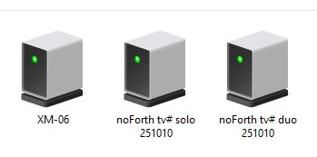
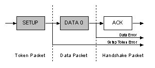
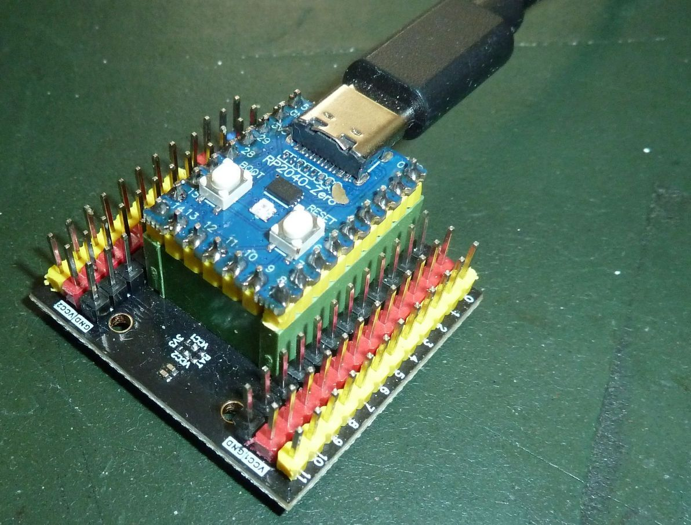

november 2025
noForth CDC driver
Authors: Leon Konings, Willem jager, Henny Luijkx & Willem Ouwerkerka) introduction
Copyright Wikipedia commons
 This document describes the development of a USB-CDC
(Communication Device Class) device driver in noForth.
The USB standard contains matching protocols for different types of devices.
For example, for keyboards, virtual disks, and USB modems.
The USB standard is a protocol that allows devices to be connected to a computer.
This document describes the development of a USB-CDC
(Communication Device Class) device driver in noForth.
The USB standard contains matching protocols for different types of devices.
For example, for keyboards, virtual disks, and USB modems.
The USB standard is a protocol that allows devices to be connected to a computer.
USB is a bidirectional serial bus protocol. There are a number of standards with different speeds that can be used at the same time. Currently (November 2025), there are four standards for bus speed:
- USB 1.1 low speed (1.5 Mbit/s), full speed (12 Mbit/s);
- USB 2.0 (480 Mbit);
- USB 3.0 (5 Gbit/s);
- USB 4.0 (40 Gbit/s).
The protocol supports a single master (HOST) per bus and a maximum of 127 devices.
The data lines consist of two twisted wires with differential
signals.
More information about USB.
b) USB on the RP2040
The USB connection of the RP2040 provides power and the ability to upload and install programs. The USB hardware offers a 12 Mbit/s full-speed bus. The RP2040 has software in ROM to use the USB as a bootloader. The RP2040 then turns into a virtual USB disk.

Copyright Raspberry Pi Ltd
With that USB connection, instead of serial communication via a separate RS232 dongle, we can use the USB cable for interactive communication with the RP2040. That saves on extra cables, frees up the pins for other applications, and also significantly increases the communication speed.
- An RP2040 board
- noForth UF2 files with USB driver
- Suitable terminal program
- More details in the document: getting Started with noForth t
- Every OS has its own characteristics.
- Terminal emulators have that too
- A USB hub can become overloaded or malfunction
If you have any problems, please refer to our background documentation.
c) The development of noForth with USB

We got help, and in November we decided to develop a second, clear
implementation alongside it. At the beginning of January 2025, the output was working, and
at the end of January, the driver on top of noForth was working. After attempts to add handshake,
it was decided in March 2025 to apply the low-level ACK/NAK handshake.
Now there is a working driver for both noForth solo and noForth duo, (two CDC channels).
The complete timeline can be found here.
d) USB Setup Stage
Copyright 2010 | Craig.Peacock@beyondlogic.org

Check out the configuration tables.
- Initialize the USB hardware of the RP2040.
- Receiving and responding to configuration packages from the host (PC). This determines which driver the operating system will load.
- Once the host is satisfied with the configuration, sending and receiving data packets can begin.
What happens when a USB device is connected?
The host detects a new device on the bus (plug & play).
This is followed by roughly the following sequence of actions.
- USB host issues a bus reset, device address = 0
- Bus speed detection
- Request for device descriptor at address 0
Send device descriptor from address 0 - Second bus reset, device address = 0
- Bus speed detection
- We receive a device address from the host
All data will now go via this device address - Request for device descriptor
Device descriptor is sent - Request for configuration descriptor
Configuration descriptor is sent - Now the following requests in sequence:
String descriptor 0
String descriptor 2
Device qualifier (Test on USB 3.0)
Device descriptor
Configuration descriptor (short)
Configuration descriptor (complete)
Set configuration
String descriptor 2 (short)
String descriptor 2
String descriptor 0
String descriptor 2
e) Activate USB-CDC
After the USB basic setup procedure has been completed, the host knows that it is dealing with a USB-CDC connection. This is specified in the device and configuration descriptor. Below is an example of this procedure:
- Get line coding request (RS232 parameters)
- Set control line state (Is connection complete? = No)
- Set line coding request (RS232 parameters)
- Get line coding request (RS232 parameters)
- Set control line state (Is connection complete? = Yes)
- Set line coding request (RS232 parameters)
- Get line coding request (RS232 parameters)
- Ready, then the noForth startup notification will be sent.
f) Gathering USB data
Each operating system has its own method of presenting the connected devices on the USB bus. Here is an overview:
First, open Device Manager and then Ports (COM & LPT).
The COM port of the USB driver can be found there.
Or open Control Panel and then Devices and Printers and click on the icon under which noForth etc. is listed.
Search there for information about the USB devices with: ls /dev/tty*, where the type of driver is listed. This is usually an ACM device.
Then there is lsusb -v for more information.
Look at ‘system information’ the driver is listed as:
/dev/tty.usb-modemXXXX.
g) Getting USB up and running

Connect the RP2040 to the PC via the USB-C or micro-USB connector on the board. Problems?See: getting started with noForth t.
When the terminal does not detect the port, please refer to: background information.
Start TeraTerm and select: COMxx Serial USB Device.
Set line delay and newline.
Launch GTKterm and select: /dev/ttyACMx
Set line delay to 1 ms and CR LF auto and you're done.
e4thcom with ACK/NAK or line delay also works.
Start Coolterm and select: /dev/tty.usb-modemXXXX
Set handshake to wait for remote echo and enter key emulation
to cr+lf